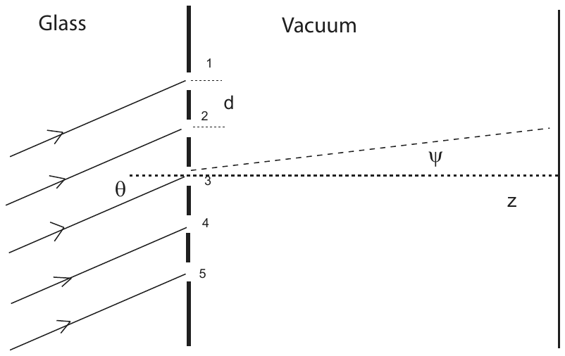

Examen final de práctica 3 (con soluciones) — 8.03SC
Física III: Vibraciones y Ondas
Yen-Jie Lee (traducción al español)
Examen final de práctica 3
Instituto Tecnológico de Massachusetts
Física 8.03
EXAMEN FINAL DE PRÁCTICA 3
Hoja de fórmulas
Ecuaciones de Maxwell en el
vacío
Ecuación
de ondas para los campos electromagnéticos en el vacío
Energía
electromagnética por unidad de volumen y vector de Poynting
Transmisión y reflexión
Velocidad de fase e
impedancia
Campo eléctrico de una
carga acelerada
Potencia total emitida por la carga acelerada:
Transformada de Fourier
Interferencia y difracción
Interferencia de dos fuentes de amplitudes
y
con una diferencia de fase relativa
:
Interferencia de
campos de igual amplitud con fases
:
Difracción por una rendija, donde
es la diferencia de fase entre los rayos procedentes de los bordes y del
centro de la rendija:
Razones de transmisión y reflexión del campo eléctrico, en magnitud y
signo, para radiación que incide normalmente sobre una interfaz entre
dieléctricos sin pérdidas de índices de refracción
y
:
Camino óptico entre
y
:
Problema 1 (30 puntos)
Responda a cada pregunta conceptual por separado. Cada una vale 5
puntos.
a. Luz polarizada circularmente de intensidad
incide sobre un filtro que transmite una polarización lineal. ¿Cuál es
la intensidad transmitida?
b. La electrónica utilizada en el acelerador LHC
emplea pulsos cuadrados de 1 ns. ¿Cuál es el rango aproximado de
frecuencias (ancho de banda) necesario para enviar tales pulsos?
c. La relación de dispersión de las ondas en aguas
profundas es
.
¿Cuáles son las velocidades de fase y de grupo, y cuál es su magnitud
relativa para un
dado?
d. Se instala un láser verde
(
nm) en la Luna, que envía un haz de luz hacia la Tierra. ¿Cuál es el
tamaño aproximado de la mancha de luz sobre la superficie terrestre si
la anchura del haz láser en la Luna es de 1 metro y la distancia entre
la Luna y la Tierra es de 380 000 km? El haz está limitado por
difracción.
e. Está sentado erguido en la playa, junto a un
lago, en un día soleado, con sus gafas de sol Polaroid puestas. Cuando
se tumba de lado, mirando al lago, las gafas de sol no funcionan tan
bien como cuando estaba sentado erguido. ¿Por qué no?
f. Suponga que luz monocromática incide sobre una
red de difracción. ¿Qué le ocurre al patrón de máximos principales si la
misma luz incide sobre una red que tiene más líneas por centímetro? ¿Qué
le ocurre al patrón de máximos principales si incide luz de mayor
longitud de onda sobre la misma red?
Problema 2 (30 puntos)
Una partícula de masa
y carga
está obligada a moverse sin fricción a lo largo de la dirección
.
La partícula es iluminada por una onda plana electromagnética viajera
cuyo campo
asociado es
donde
es constante y
es un parámetro (constante) desconocido. La onda viaja por el espacio
libre.
a. Calcule el parámetro
;
justifique el cálculo.
b. Escriba el campo eléctrico de la onda incidente
.
c. Calcule la aceleración
de la carga
.
Puede despreciar cualquier pérdida de energía al calcular el movimiento
de la carga.
d. Deduzca el campo eléctrico
radiado por la carga hacia las tres posiciones siguientes. ¿Cuál es la
polarización en esas tres localizaciones?
Problema 3 (40 puntos)
Una red sencilla que tiene 5 rendijas largas y estrechas está pegada
sobre un bloque de vidrio de índice de refracción
.
Una fuente monocromática de ondas planas ilumina la red desde el
interior del vidrio. La longitud de onda de la luz en el vacío es
.
La figura 1 muestra una sección transversal de la red; la longitud de
las rendijas es perpendicular al papel. La fuente está fuera del eje,
con un ángulo
respecto de la normal a la red, como se muestra (¡el signo de
es importante!). Las rendijas son muy estrechas en comparación con su
separación
y con la longitud de onda de la luz que las ilumina, y la pantalla está
muy lejos en comparación con
.
a. Considere primero el caso
.
Demuestre, mediante un diagrama sencillo, que la diferencia de fase
entre los rayos procedentes de rendijas adyacentes, observados a gran
distancia con un ángulo
respecto del eje
,
es
.
b. Considere ahora un
arbitrario. ¿Cuánto vale
?
c. Escriba una expresión, en términos de
,
,
y
,
de la intensidad
que se observará en la pantalla.
d. Esboce la intensidad
en función de
.
Asegúrese de especificar la posición de los primeros máximos y mínimos
de interferencia.
e. Considere ahora la misma red con las dos rendijas
exteriores bloqueadas (rendijas 1 y 5). Escriba una expresión para la
intensidad observada en la pantalla.
f. Haga el esbozo de la nueva intensidad frente a
y compárelo con el esbozo obtenido para las 5 rendijas. ¿Cuáles son las
nuevas posiciones de los primeros máximos y mínimos? ¿Cómo ha cambiado
la magnitud de los máximos?

Figura 1: red de difracción. Las 5 rendijas, numeradas de 1 a 5
y separadas una distancia
,
están sobre la cara del bloque de vidrio; la luz llega desde el vidrio
con un ángulo
respecto de la normal y se observa en el vacío con un ángulo
respecto del eje
.
Soluciones
[Nota de la traducción: las soluciones de este examen están
manuscritas en el original y encabezadas «Solutions to Exam #3, 8.03
Spring 2014». Se han transcrito y traducido íntegramente; los esbozos de
los apartados 3.d y 3.f se describen con palabras.]
Solución del problema 1
a)
Después del polarizador solo permanece una componente, por ejemplo
.
b)
c)
d) La anchura del pico de difracción es
Se obtiene un radio más preciso analizando fuentes circulares:
e) La luz reflejada en la superficie del agua está
predominantemente polarizada con
paralelo a la superficie del agua. Las gafas Polaroid filtran esa
polarización. Al girarlas 90°, dejamos pasar esa luz, anulando el efecto
de bloqueo del sol.
f) Usando
Si
y
es menor, la distancia entre máximos principales aumenta, y estos se
vuelven más estrechos y más altos.
Si
es mayor, la distancia entre máximos principales aumenta.
Solución del problema 2
a) Como
y
:
b)
c)
La fuerza debida al campo
puede despreciarse, puesto que
está obligada a moverse a lo largo de
.
Entonces
d)
(1)
,
ya que
es paralela a
y no tiene componente transversal a
.
(2)
Polarización lineal.
(3)
:
igual que en (2).
Solución del problema 3
a) La diferencia de camino entre rayos de rendijas
adyacentes es
,
de modo que
b) La onda incidente introduce un desfase adicional.
Hemos definido
y
de modo que ambos desfases se cancelan. Además, la presencia del vidrio
cambia la magnitud del desfase:
c)
donde
es la intensidad de una sola rendija.
d) El máximo principal está en
,
es decir, en
,
y alcanza el valor
.
El primer mínimo está en
,
es decir, en
(Esbozo: máximos principales altos y estrechos de altura
,
centrados en
y repetidos periódicamente, con tres lóbulos secundarios pequeños entre
cada par de máximos principales.)
e) Con las rendijas exteriores bloqueadas,
:
con un máximo de
.
f) El máximo principal sigue estando en
y el primer mínimo pasa a estar en
,
es decir, en
Comparación:
Valor máximo:
frente a
.
Posición de los máximos principales: la misma.
Primer mínimo:
frente a
;
queda más lejos con 3 rendijas.
Los máximos principales son más anchos con 3 rendijas.
(Esbozo: el patrón de 3 rendijas presenta máximos principales más
bajos y más anchos, con un solo lóbulo secundario entre cada par de
máximos principales.)